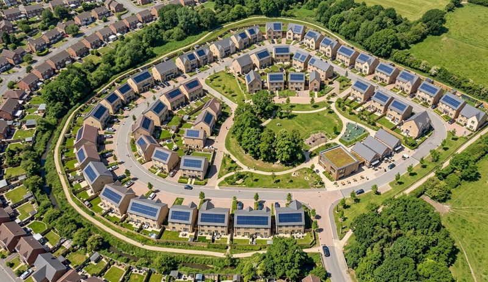

Showing all 8 articles

Gryd’s Council Housing Solar Rankings 2026: Which Regions Are Leading and Which Are Falling Behind?
Gryd has launched the Gryd Council Housing Solar Index, a new industry benchmark of council solar deployment across the UK. Discover which regions are leading and lagging behind.
Danielle Todd13 July 2026

Solar has never been more popular. So why do solar farms keep getting rejected?
Solar enjoys 86% public support in the UK, yet the proposed Lime Down farm in Wiltshire drew nearly 5,000 objections. The same 500MW could sit on around 100,000 rooftops instead, generating power where people use it: no lost farmland, less grid congestion, lower bills from day one. There is another way to build 500MW, and it starts on the roof.
Scott Whiteside25 June 2026

The Complete Guide to Funded Solar and Storage for New-Build Homes (2026)
The Future Homes Standard makes solar unavoidable for new-build homes. This guide compares every route available to UK house builders for delivering solar and battery systems, from zero-CAPEX subscriptions and private-wire microgrids to energy supplier tariff partnerships, government schemes, and self-funding. Find the right model for your development.
Scott Whiteside5 May 2026

SAP Scores vs Real Energy Use: Why Developers Are Missing Half the Picture
SAP scores don’t account for total energy use in new homes. Learn why UK housebuilders must consider real demand and how solar can better support it.
Hugo Radford22 April 2026

The Future Homes Standard: How to Differentiate When Everyone Must Comply
The Future Homes Standard means every new home in England must include on-site renewable generation and low-carbon heating, from 2028. When compliance is universal, the question for developers shifts from whether to build sustainably to how to stand out.
Danielle Todd25 March 2026

The Future Homes Standard is Published — Here’s the Confirmed Timeline for Implementation
The Future Homes Standard comes into force on 24 March 2027, with a 12-month transition deadline of 24 March 2028. Here is a practical breakdown of the confirmed implementation timeline, the HEM/SAP crossover, and what developers should be doing right now.
Scott Whiteside24 March 2026

Future Homes Standard: How to Calculate How Much Solar You Need
On-site renewables is now a functional requirement for every new home in England. This guide breaks down the confirmed sizing formula from Approved Document L 2026 and explains why designing beyond the minimum is essential.
Scott Whiteside24 March 2026

Future Homes Standard: What It Means For UK Housebuilders – And A Closer Look At The Solar Mandate
Future Homes Standard explained for UK housebuilders. Learn how solar panels, heat pumps and battery storage will shape new build homes – and how to prepare for 2027 requirements.
Scott Whiteside19 March 2026
Nothing published in this category yet.
Read enough. Now put it against your own site.
A site assessment gives you system sizing per plot, the effect on EPC, and what the homeowner pays, before you commit to anything.
Request a site assessment